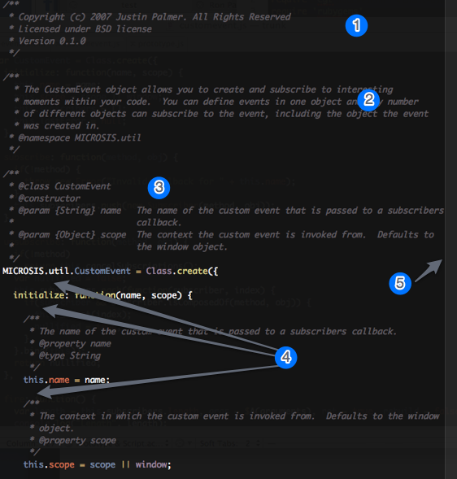

Microsis Visual Conventions
If you plan on contributing source or having your patches accepted to the project you'll need to follow a simple set of standards and conventions.
Basic style

- 1. File headers: All files must be prepended with a header containing the copyright, license, and library version #.
- 2. Basic overview: A basic overview of what a class allows you to do. Also setup the namespace for the class.
- 3. Class constructor: Document the class constructor above the
Class.create, listing the parameters accepted by theinitializeroutine. - 4. Proper spacing: A
Class.createclause is immediately followed by a blank space.
If the class has an initializate method, this should come first in the class' methods and a space should come directly after this method. Spaces should come directly after properties. - 5. Column Wrap: The column wrap should be set at 86 and your code should be formatted in such a way that the first character of a word or instruction shouldn't break this line.